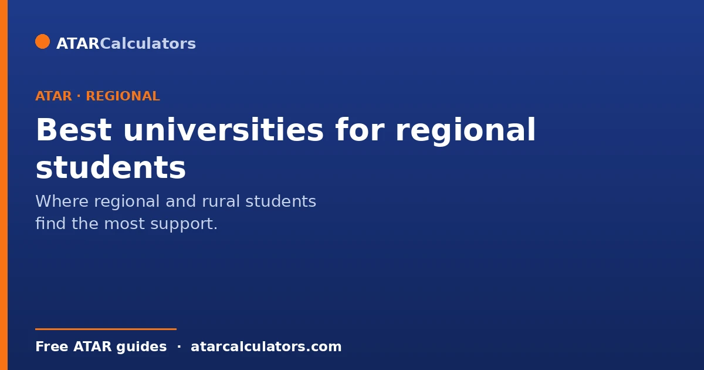
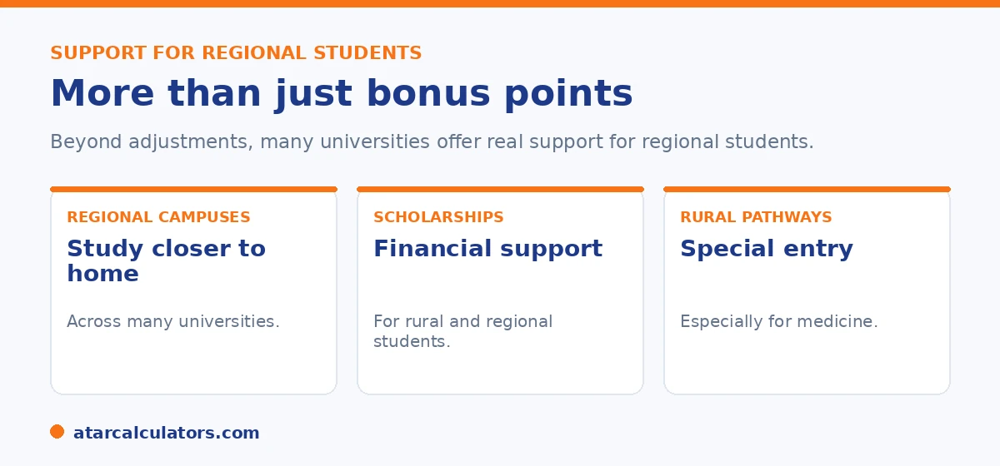

Here is the short version. Rather than a single ranking, the best university for a regional student depends on the support it offers. Look for regional campuses, so you can study closer to home. Look for scholarships and bursaries for rural students, and dedicated pathways for competitive courses like medicine. Many universities also offer accommodation support and regional student services. Check each university’s regional and rural support directly.
There is no single best university for every regional student, because the right fit depends on your course and circumstances. What matters is the support on offer.
Below is what to look for, and how to find it. To see how regional points affect your rank, use our regional points calculator.
Key takeaways
- There is no single ranking; fit depends on support.
- Look for regional campuses to study closer to home.
- Look for scholarships and bursaries for rural students.
- Look for rural pathways, especially for medicine.
- Consider accommodation and regional student services.
- Check each university's regional support directly.
The support that matters
Instead of chasing a ranking, look at the support a university gives regional students. The right support can matter more than a famous name.

The main things to look for are regional campuses, financial support, and dedicated pathways. We will look at each.
Regional campuses
Many universities have regional campuses. These let you study closer to home, instead of moving to a big city. That can cut living costs and make starting university easier.
If staying near home matters, look for a university with a campus in or near your region. Then check which courses run there. Not every course runs at every campus.
Scholarships and bursaries
Cost is a real barrier for many regional students, especially if you have to move. Many universities, and some outside groups, offer scholarships and grants for regional and rural students.
These can help with fees, housing, or living costs. Search each university's scholarship page early, since some have deadlines near when you apply. See our guide on rural pathways beyond bonus points.
Want to see how regional points help?
Try the regional points calculator →Rural pathways, especially for medicine
For hard-to-enter courses, rural pathways can be the most useful support of all. Medicine is the clearest example. Many universities run rural entry pathways for students from a rural background.
These exist because rural students are more likely to work in rural areas later, which the health system needs. If you are aiming for a hard course, look for a rural pathway into it. See our medicine entry guide.
How to choose
So the best university for you is the one whose support fits your needs. Make a shortlist. Then compare them on what matters: campus location, scholarships, pathways, and student services.
Visit open days if you can, online or in person. Ask about regional student support directly. The right fit is personal, not a ranking.
A few practical criteria make the shortlist genuinely useful, rather than just a list of names. Start with the support that actually removes barriers for regional students. Does the university offer regional-specific scholarships or bursaries? Does it offer accommodation support, or guaranteed housing for students relocating? Does it apply adjustment factors that lift your selection rank for coming from a regional area? These can matter more than a university’s overall reputation, because they decide whether attending is affordable and achievable.
Next, weigh location and delivery. A campus closer to home, or a course with strong online or blended options, can dramatically cut the cost and disruption of study. Some universities also run regional campuses or study hubs that let you stay local. Then look at the pathways into your specific field. For medicine in particular, some universities weight rural background heavily, or reserve places. That can make one institution far more accessible to you than another.
Finally, consider the everyday supports that help regional students settle in. These include orientation programs, mentoring, and services aimed at students who have moved away from home for the first time. The strongest choice is the one where the entry pathway, the financial support and the day-to-day services all fit your circumstances. It is not the one highest on a generic ranking. Ask each shortlisted university directly what it offers regional students, and let the concrete answers guide you.
Do regional campuses have lower cutoffs?
Sometimes. Some universities set lower cutoffs, or offer additional adjustments, for regional campuses or for regional students, to widen access. Others apply the same cutoffs but provide bonus points and support instead.
So a regional campus may be easier to enter for some courses, but this varies. Check the specific campus and course, since the advantage depends on the university’s policy rather than being universal.
Accommodation and relocation support
Moving away to study is a major cost for regional students, so many universities offer accommodation support, relocation scholarships, or guaranteed places in residential colleges. This support can be as valuable as any bonus points.
So when comparing universities, look beyond entry: consider the accommodation and relocation help on offer, which can make studying away from home far more affordable and manageable for a regional student.
Rural entry pathways
Many universities run rural or regional entry pathways, including for competitive courses. In fields like medicine, rural-entry and bonded schemes reserve places for students from regional backgrounds, recognising the barriers they face and the need for regional professionals.
So a competitive course that seems out of reach may have a rural pathway with different requirements. If you are from a regional area, it is worth checking for these pathways specifically. See the rural education scheme guide.
Weighing your options
The best university for a regional student depends on the combination of entry support, financial help, campus location, and the course itself. A university with strong regional support and a good course fit may serve you better than a more prestigious one with less support.
So weigh the whole picture: bonus points, scholarships, accommodation, pathways, and how well the course suits you. For a regional student, the support around a course can matter as much as the course’s reputation.
Common questions
Which universities are best for regional students?
There is no single best one, because the right fit depends on your course and needs. Look for universities with regional campuses, scholarships for rural students, and dedicated pathways, especially for competitive courses like medicine.
What support do universities give rural students?
Common support includes regional campuses, so you can study closer to home. It also includes scholarships and bursaries, accommodation help, regional student services, and dedicated rural pathways into competitive courses. The support varies, so check each university.
Do regional campuses offer the same courses?
Not always. Not every course runs at every campus. So if staying near home matters, check which courses are offered at a university’s regional campus before you apply. Check the support available there too.
Are there scholarships for regional students?
Yes. Many universities, and some external bodies, offer scholarships and bursaries aimed at regional and rural students. These can help with tuition, accommodation, or living costs. Search each university’s scholarship page early, as some have deadlines.
Do universities have rural pathways for medicine?
Many do. Rural entry pathways for medicine support students from a rural background, recognising that they are more likely to work in rural areas later. If you are aiming for medicine, look specifically for a rural pathway into it.
See how regional points help
Estimate how regional points could change your selection rank. Free, and no signup.
Open the regional points calculator →Related guides
This guide is general information for students and parents, not formal admissions advice. Adjustment factors, schemes, caps and course cut-offs are set by each university and can change every year. They differ from one institution to another, and from course to course within the same institution. Always confirm the current details with the specific university and your state admissions centre (UAC, VTAC, QTAC, SATAC or TISC). A useful starting point is UAC's guide to selection rank adjustments. Reviewed by the ATARCalculators Editorial Team.